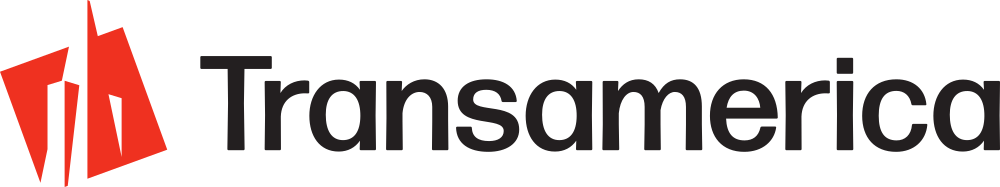

The Conversion Delivery Simulator
Wire Runner
Site under construction. Check back soon.
Every route bends. Every handoff matters. The wire does not move.

The Conversion Delivery Simulator
Site under construction. Check back soon.
Every route bends. Every handoff matters. The wire does not move.